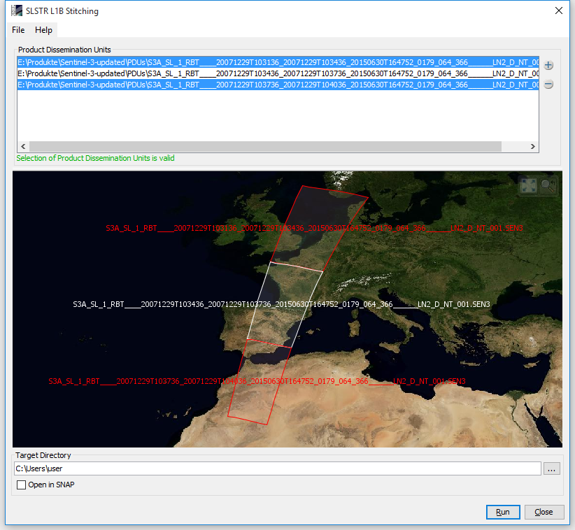

| Sentinel-3 SLSTR L1B Product Dissemination Unit Stitching Operator |
|
The Sentinel-3 SLSTR L1B Product Dissemination Unit (PDU) Stitching operator concatenates multiple PDU's so that they form a single one. Thus, the tool enables a user to reconstruct full orbit products. A PDU is part of an orbit product and is in itself a fully functional SLSTR L1B product.

To use the tool it is necessary to define which PDU's shall be stitched together. This can be achieved by adding or removing files, directories, or products that are already opened in SNAP. A label below the list of PDU's will indicate whether the current selection is valid. The selection of PDU's must be of the same orbit and do not show any gaps. The world map shows the boundaries of the PDU's. PDU's selected in the list will be highlighted in the map. It is also possible to move in onto the selected PDU's.
At the bottom of the dialog, the target directory can be specified. The actual product name will be constructed from the selected PDU's according to the SLSTR L1B naming specification. Additionally, one can choose whether the product shall be opened in SNAP after the stitching is finished.
When the Run-button is clicked, the selected PDU's are stitched together and the resulting SLSTR L1B product is saved at the specified target directory.